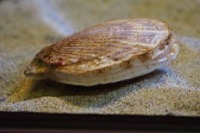

ほたてがい（帆立貝）の漁獲量
いちばん多くとれる都道府県
ほたてがいが日本でいちばん多くとれるのは北海道です。33万176 tで、全国（33万592 t）の100%を占めます。

| 順位 | 都道府県 | 漁獲量 | 全国に占める割合 |
|---|---|---|---|
| 1位 | 北海道 | 33万176 t | 100% |
| 2位 | 青森県 | 416 t | 0.1% |
この数字について
- 分類：貝の仲間
- 全国の漁獲量：33万592 t
- この数字が表すもの：漁獲量（海でとれた重さ。養殖は含みません）
- 調査：海面漁業生産統計調査（海面漁業） 令和5年
- 2県分を調査（調査していない県は順位に入りません）